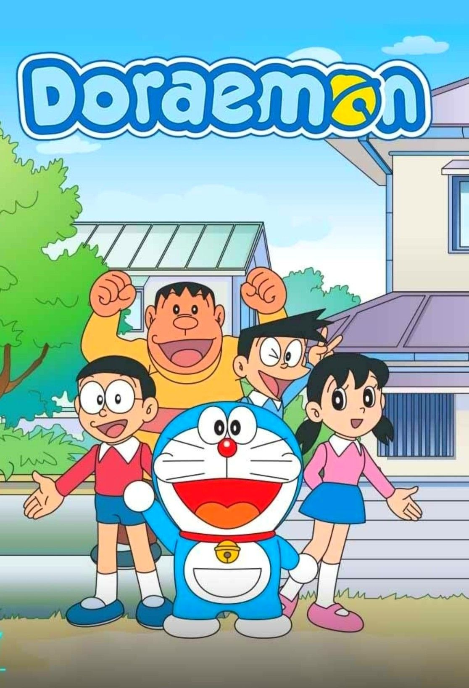
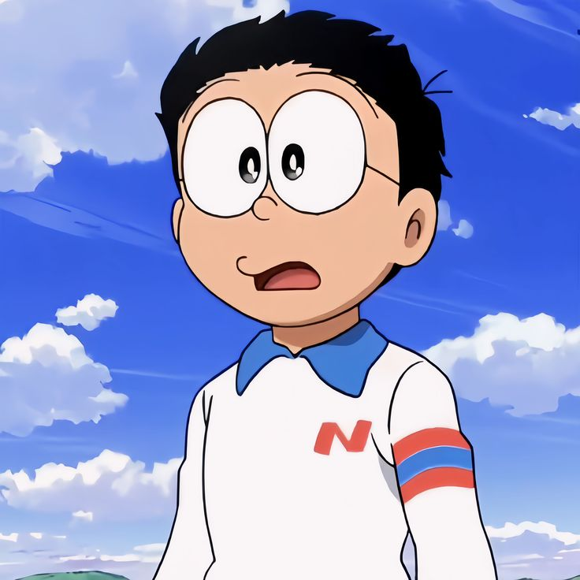
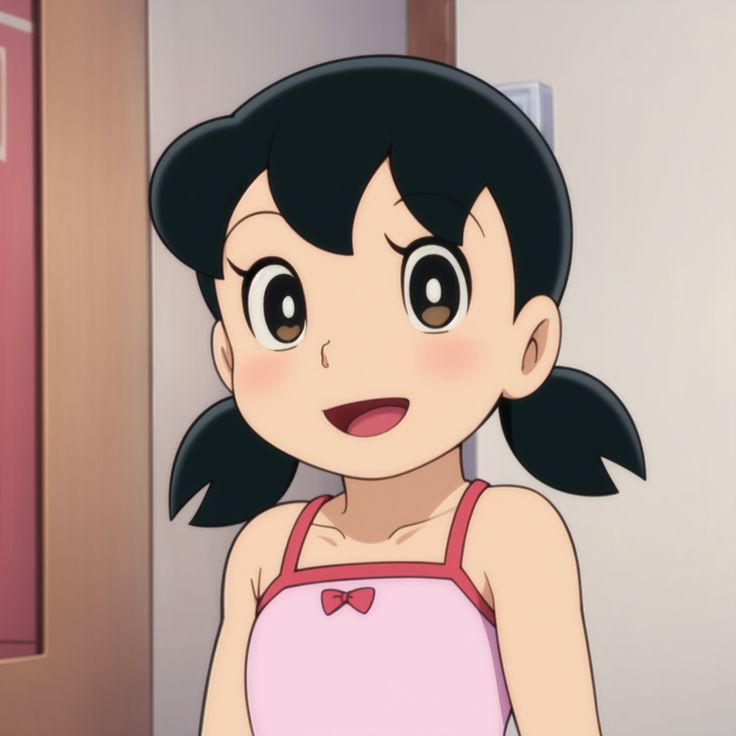
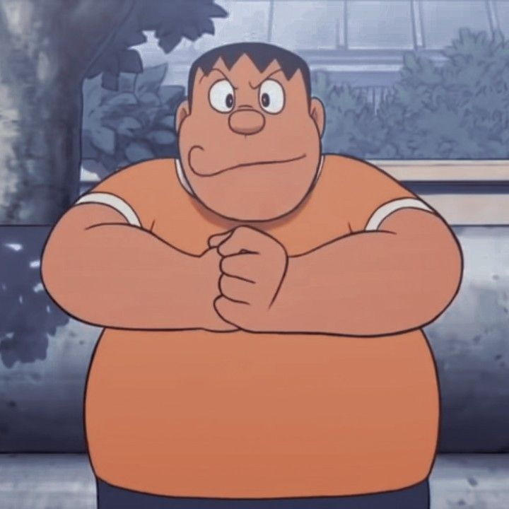
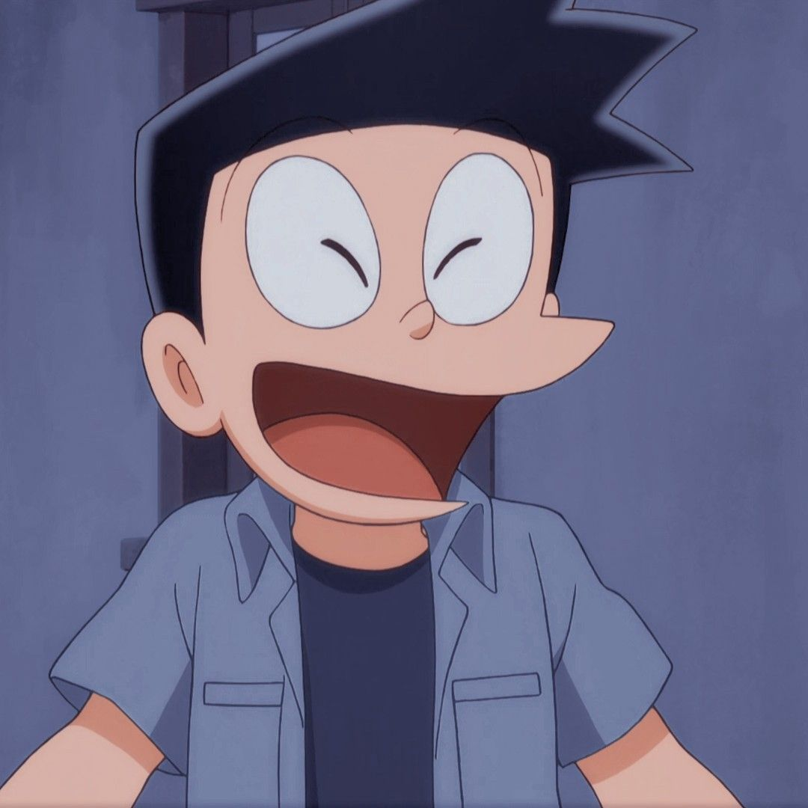

Doraemon 🔵
"Anywhere Door & Time Machine Magic!"
Nostalgic cartoon theme song!
About Doraemon
Blue robotic cat from the 22nd century sent to help lazy Nobita! With his 4D pocket full of magical gadgets like Anywhere Door, Take-copter, and Time Machine, Doraemon solves Nobita's problems (and creates new ones!). Ultimate childhood companion!
🎬 Best Doraemon Scene!
From "Ye bhi tha Nobita, Wo bhi tha Nobita" - Funny classic moment!
Main Characters

Nobita
Lazy student who fails everything!

Doraemon
Blue cat robot with 4D pocket!

Shizuka
Nobita's perfect crush!

Gian
Bully with amazing singing!

Suneo
Rich show-off friend!
🌟 Why We Miss It
- Anywhere Door = ultimate travel dream!
- Take-copter flying was everyone's fantasy
- Bamboo copter sound effect = instant nostalgia
- Nobita-Shizuka love story melted hearts
- 2,000+ episodes spanning 50+ years!
📺 Must-Watch Episodes
Anywhere Door Adventure!
Nobita visits future Tokyo instantly
Time Machine Chaos
Doraemon's time travel goes wrong!
Shizuka's Birthday
Nobita's perfect gift plan fails
💬 Legendary Quotes
🧠 Did You Know?
- Doraemon fears mice (allergic reaction)
- Original Doraemon had ears (bitten off!)
- 45+ movies made billions worldwide
- Japan's most loved character ever
- 4D pocket has 1,300+ gadgets!